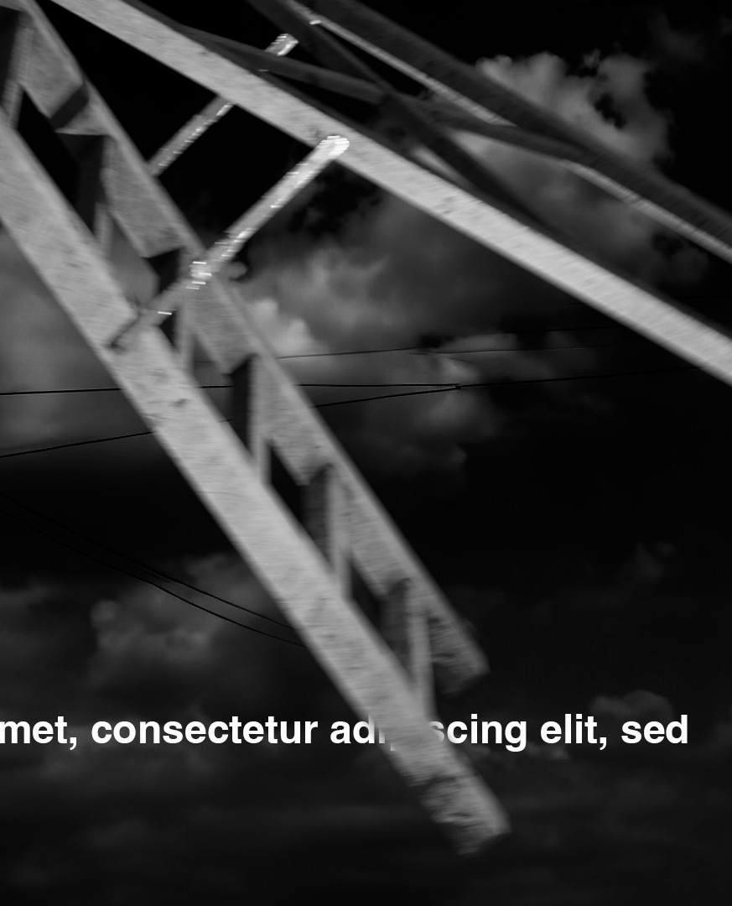

tyc
- About
- Vizuální programování
- Internetové technologie
Ukázka prací z hodin vituálního programování a internetových techonologií
Vizuální programování - DaVinci resolve fusion lesson
Cvičení v DaVinci - nahrazení oblohy pomocí masek
projekty
Internetové technologie - HTML cvicení
nesting, headings, file paths
projekty
